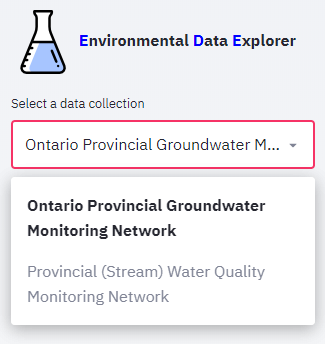
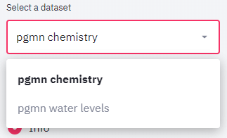
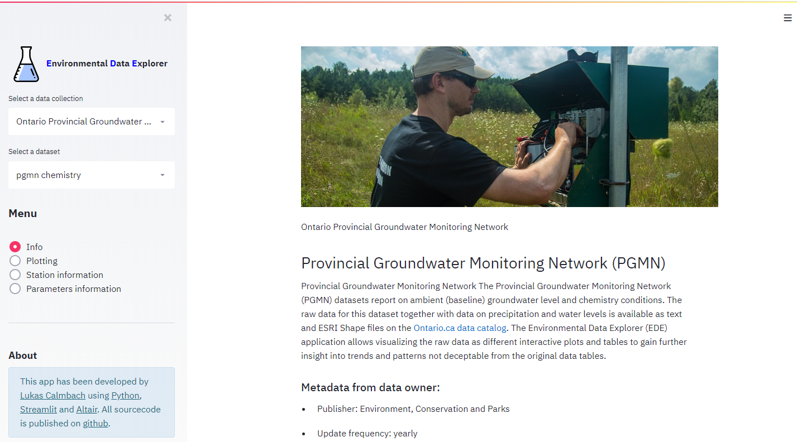
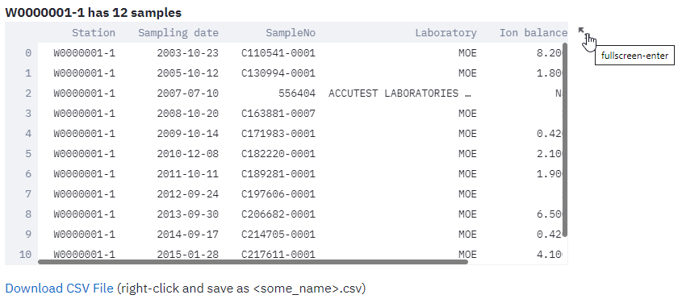

Main Concepts¶
Data collection¶
A data collection consists of datasets related to each other. For example, The PGMN data collection comprises the datasets chemistry, which is the main dataset, water levels, and precipitation data. A data collection requires a introductory text and a least one dataset. Data collections can be selected from the select a data collection listbox above the menu.
{kind=link}
Data sets¶
Each datasets consist of three entities: * a station table * a parameter table * a data table
To explore a dataset, it needs to be selected in the section above the menu. If a data collection includes only a single dataset, for example the Privincial stream water quality monitoring network data collection, this dataset is selected by default and no dataset selectbox is shown to the user. If there are more than one dataset, a listbox is displayed below the data collection listbox where you may select the dataset you wish to explore.
{kind=link}
User interface¶
The user interface is very simple. It is devide in a sideboard holding all controls and menu items and the view panel to the right.
{kind=link}
The sideboard is further subdivided from top to down into the data selection controls, the menu, and the controls for generating plots. The latter only appears if the menu item ‘plots’ is selected.
The view panel is used to display plots and tables requested by the user via the sideboard controls.
Plots¶
Plots are created using the Plotting menu item. The hamburger menu to the upper right of each plot allows to save or edit the plots. In the plot mode, the sideboard contains a show data option, allowing to show the data used for creating the plot. This data can be downloaded and the user may recreated the plot using his preferred charting software.
Tables¶
Data is displayed as plots or in tables. For larger tables use the scrollbars to view the full table content. You may also use the handle in the upper right to open a new window, resulting in displaying a larger version of the table.
{kind=link}
Below each table, you will find a link, that allows downloading a csv file of the data. You may either just click on the link and download the file under a default name to your download folder. Rightclick the link and select the <save as> command in the context menu, to directly place the file under a specified name in your target folder.